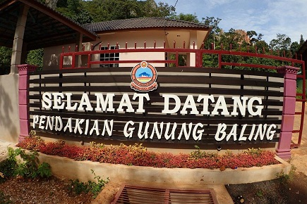
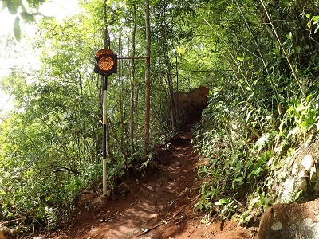
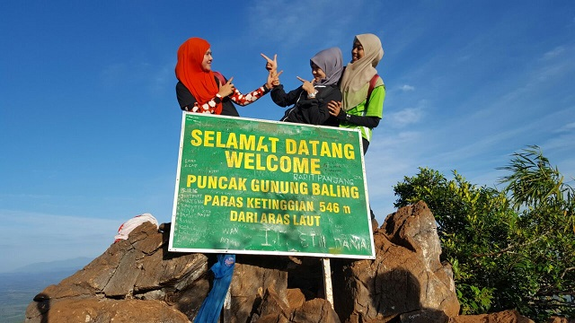
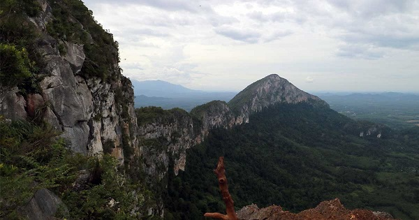

Hi everyone, this is my first experience of hiking at mountain baling , kedah. Gunung Baling is a mountain in Kedah, Malaysia.that standing at 546 meters tall.The summit offer beautiful 360 degree view of it surrounding.my friends and i went hiking on the semester break last year. all the preparations we provide before hiking, such as mineral water and most importantly we need full of energy. |
|  |
|---|
There is only one trail up Gunung Baling which is straightforward and pretty well-marked. Along the way there are signage and lamp marker to guide you through. From the carpark, the trek up Gunung Baling is about 1.85km long with a height elevation of around 450m.The entrance to the start of the trail is at the end of the carpark.The first 400m of the hike are spent walking up 30 to 45 degrees lopes on soil/muddy trails. The soil/muddy trail can be slippery after rain or heavy downpour. At the stepper sections, there are handrails for support. After this section, the trail turns flat/gradual for the next 300 meters, most predominately walking up a flight of stairs and through the jungle trails. |
|  |
For the last 1.1km, the trail continues to go up and gradually the terrain becomes more and more rocky. Nearing the last part of the jungle trail, you will need to climb up a rock obstacle and crawl under some rocks to reach the ridge line. Enjoy the view and walk on the ridge line to reach the summit.The view on the mountain is very beautiful and comfortable, we spent time recording the moment on there. Eventhough, its quite tired and needs a lot of energy, but its very satisfied with the beautifuls view on the top of the Baling Mountain. |
|  |
Having this moment are the best experience i have in my life, because i have a lot of fun with my friends and at the same time i can see the beautiful view on the top of Baling Mountain. Next, i will challenge my self to go more adventures place. Hiking is a bit like life, The Journey only requires you to put one foot in front of the other..Again and again... And if you allow yourself opportunity to be present throughout the entirety of the trek, you will witness beauty every step of the way, not just at the summit. |
|  |